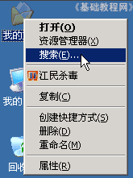
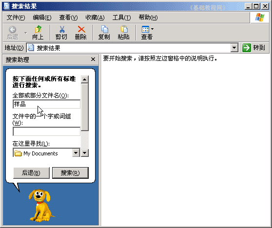
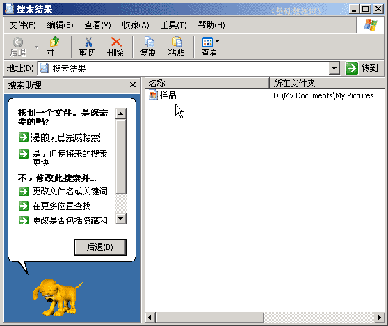
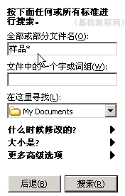
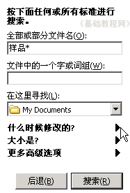
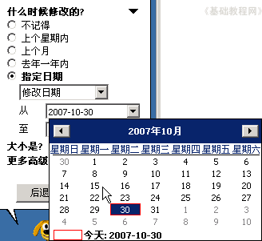
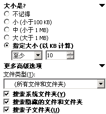

电脑操作基础
十七、搜索文件 返回
文件多了或者很久以前的文件，可能忘了放哪儿了，这时候可以使用搜索功能；
1、搜索文件
1）在桌面“我的文档”图标上点右键，选择“搜索”命令，也可以在其他的文件夹上敲右键；

2）在弹出的窗口中，左边第一个长条中输入“样品”；

3）点击下面的“搜索”按钮，开始搜索，过一阵出现搜索结果；

2、高级搜索
1）文件名中可以使用通配符，* 号可以代表任意字符，比如输入“样品*”，则样品、样品1、样品2都可以找到，
这样只要记得文件名中的一部分，就可以搜到相关的所有文件；

2）按时间搜索，在下面的时间选项中可以设定时间范围，
点击第一个“什么时候”右边的黑三角按钮，然后在里面选择指定日期；
 
3）还可以选择“大小是？”和高级选项里的设定来搜索，比如搜索隐藏文件、搜索系统文件；

本节学习了在WinXP中搜索文件的基本方法，如果你成功地完成了练习，请继续学习下一课内容；
本教程由86团学校TeliuTe制作|著作权所有
基础教程网：http://teliute.org/
美丽的校园……
转载和引用本站内容，请保留作者和本站链接。